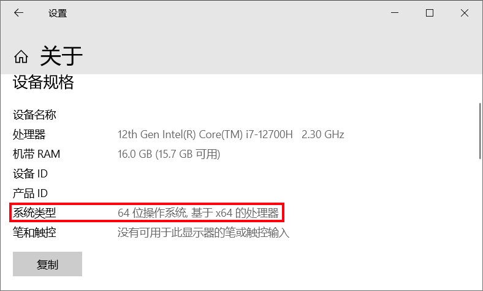
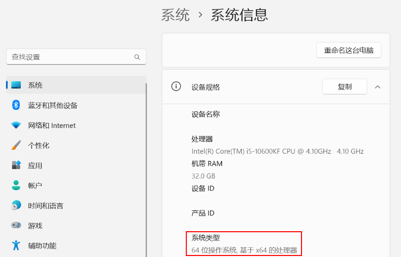

辨别系统的位数
作者：还给我六个币
位数有什么用
操作系统的位数也指CPU的位数，即CPU一次能处理的最大位数。32位CPU只能支持4GB的RAM，而64位的CPU最多可以支持128GB的RAM。现在市场上一般使用64位操作系统。在下载软件时，有的软件会要求您选择合适的安装包，在安装包中写着“x64”的即64位操作系统版，写着“x32”的即32位操作系统版。64位操作系统可以运行32位操作系统版软件，但是32位不能运行64位。
Windows10上辨别
Windows10操作系统可以通过右键“此电脑/计算机/我的电脑”，点击“属性”，在系统类型查看。
Windows11上辨别
Windows11操作系统可以通过“设置/系统/系统信息/设备规格”中查看。
